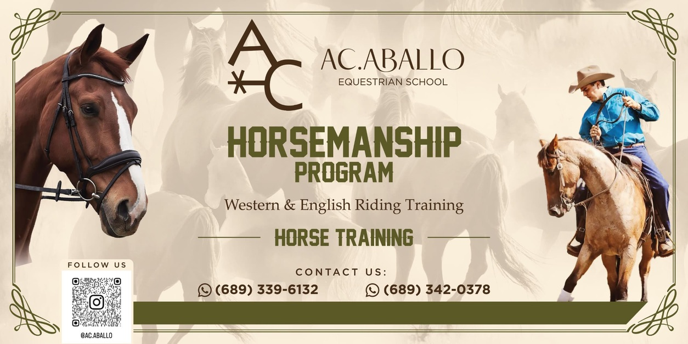

Escuela de Caballos · Conexión · Bienestar · Horsemanship
Transformando corazones a través de los caballos
Ac.aballo es una escuela ecuestre y un espacio de conexión emocional donde el caballo se convierte en maestro, espejo y guía del desarrollo humano.
Bebés desde 11 meses · Niños · Adolescentes · Adultos · Familias · Personas con condiciones especiales
Aquí no solo se aprende a montar
Aquí se aprende a sentir, regular, confiar y avanzar. La técnica importa, pero la conexión es el camino. El vínculo caballo–humano es nuestra base.
Elige tu experiencia
Cada experiencia se adapta al momento físico, emocional y energético de cada persona.
Bebés (desde 11 meses)
Primera conexión, calma y vínculo seguro.
Niños y Adolescentes
Seguridad, confianza, comunicación y presencia.
Adultos
Técnica + horsemanship + liderazgo consciente.
Familias
Experiencias compartidas de conexión en manada.
Condición especial
Acompañamiento adaptado, respeto y ritmos individuales.
Cabalgatas
Naturaleza, libertad y presencia.
Seguridad y confianza, paso a paso
La conexión es el camino, y la seguridad es la base. Trabajamos por niveles, respetando el ritmo de cada persona.
Enfoque en seguridad
Te orientamos sobre equipo y reglas básicas para una experiencia segura y cuidada.
Progreso por niveles
Desde primeras interacciones hasta técnica avanzada, con metas claras y acompañamiento.
Respeto al caballo
Horsemanship: escuchar, leer el lenguaje corporal y construir confianza real.
¿Cómo empiezo?
Tres pasos simples para elegir la experiencia ideal.
- Escríbenos con edad, experiencia y objetivo.
- Te guiamos hacia el programa más adecuado.
- Agendamos tu visita o tu primera sesión.
Momentos de conexión
Algunas imágenes de lo que se vive en Ac.aballo.


¿Listo para conocer la manada?
Te ayudamos a elegir el programa ideal según edad, experiencia y objetivo.